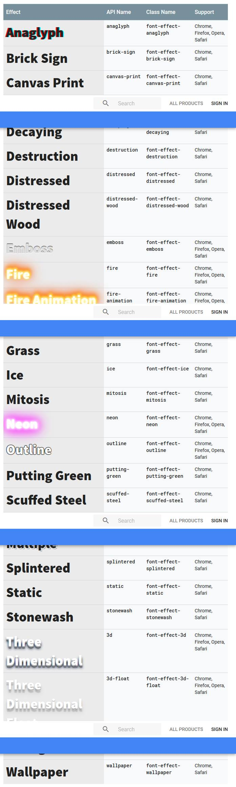
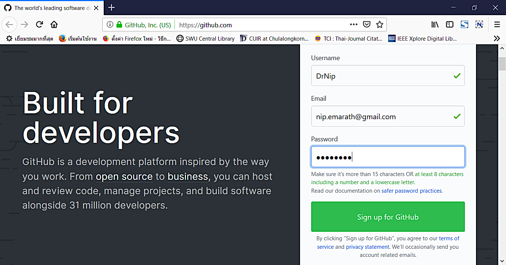
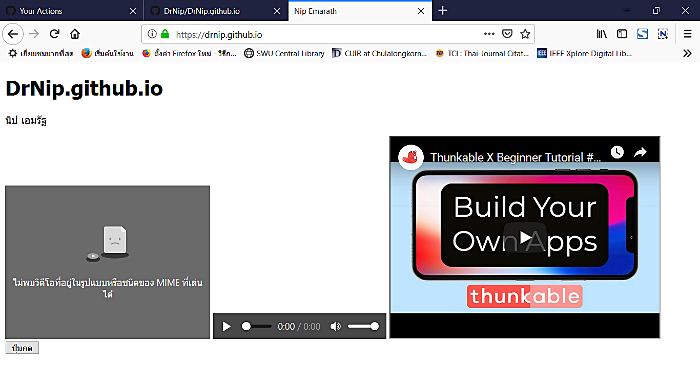
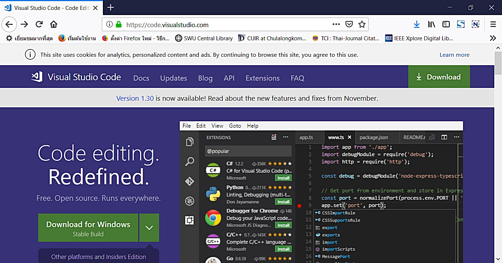

การเพิ่มอีเมลฟอร์มให้กับแม่แบบเว็บไซต์
โดย นิป เอมรัฐ
สร้างแบบฟอร์มสำหรับเว็บไซต์ HTML
ขั้นตอนโดยละเอียด
เชื่อมต่อแบบฟอร์ม
<form action="https://formspree.io/ใส่อีเมลของคุณตรงนี้" method="POST" />
สังเกตข้อความในเครื่องหมายคำพูด แทนที่ข้อความ *ใส่อีเมลของคุณตรงนี้* ด้วยอีเมลของคุณ เช่น
<form action="https://formspree.io/nip@gmail.com" method="POST" />
เพิ่มคุณลักษณะ name attributes ในทุกๆ ส่วนประกอบ เช่น แท็ก input, select, และ textarea ดังตัวอย่างต่อไปนี้
<input type="text" name="name">
ส่งและยืนยัน
ตัวอย่างแบบฟอร์มติดต่อทางอีเมล (Email Contact Forms)
<form method="POST" action="https://formspree.io/ใส่อีเมลของคุณตรงนี้">
<input type="text" name="name" placeholder="ชื่อ - นามสกุล"/>
<input type="email" name="email" placeholder="อีเมลของคุณ">
<textarea name="message" placeholder="ความคิดเห็นของคุณ"></textarea>
<button type="submit">ส่งความคิดเห็น</button>
</form>
Formspree. (2019, Feb 25). Email Contact Forms. Retrived from https://formspree.io/
การใส่รูปไอคอนบนหน้าเว็บ
โดย นิป เอมรัฐ
รายการไอคอน
วิธีใช้งาน
รวมแม่แบบเว็บไซต์ฟรี
โดย นิป เอมรัฐ
รวมแม่แบบเว็บไซต์ฟรี 100 แบบ (668 MB)
Template Collection 2019 - One Hundred FREE HTML5 Templates in One Pack
(เพิ่มเติม)
More About Google Fonts
โดย นิป เอมรัฐ
นอกจากนี้ เรายังสามารถเรียกใช้ effect ผสมกันในฟอนต์เดียวกันได้ (แต่คนละข้อความ) ดูตัวอย่างรหัสต่อไปนี้
<html>
<head>
<link href="https://fonts.googleapis.com/css?family=Charm&effect=fire-animation|3d-float" rel="stylesheet">
<style>
body {
font-family: 'Charm', serif;
font-size: 100px;
}
</style>
</head>
<body>
<div class="font-effect-fire-animation">อากาศวันนี้ร้อนดั่งไฟ<div>
<div class="font-effect-3d-float">อากาศวันนี้ร้อนดั่งไฟ<div>
</body>
</html>
Google Fonts
โดย นิป เอมรัฐ
Google Fonts เสนอฟอนต์คุณภาพสูงสำหรับใช้กับเว็บไซต์ของเรา
ข้อดี
ใช้ง่าย
ฟรี
Google Fonts. (2019, Feb 11). Retrieved from https://developers.google.com/fonts/
การเลือกฟอนต์
https://fonts.google.com/
Search > Languages > Thai
ทดลองดูฟอนต์ในรูปแบบต่างๆ เช่น Sentence, Paragraph, Alphabet เป็นต้น
ทดลองดู ปรับต่อไปตามต้องการ เช่น Regular, Light, Thin เป็นต้น รวมถึงขนาดฟอนต์ต่างๆ
ทดลองพิมพ์ข้อความลงในกล่องข้อความ เพื่อดูผลลัพธ์ว่าจะตรงตามต้องการหรือไม่
คลิกเครื่องหมายบวกที่มุมบนขวา เพื่อเลือก สมมติว่า เราเลือก Pattaya และ Krub
การนำฟอนต์ไปใช้กับเว็บเพจ
เปิดลิ้นชักฟอนต์ที่เลือกไว้
ฝังฟอนต์ (Embed Font) โดยนำรหัสที่ได้ไปวางไว้ภายในแท็ก head
<link href="https://fonts.googleapis.com/css?family=Krub|Pattaya" rel="stylesheet">
ระบุชื่อฟอนต์ในไฟล์ CSS
font-family: 'Pattaya', sans-serif;
font-family: 'Krub', sans-serif;
Google Fonts. (2019, Feb 11). Retrieved from https://fonts.google.com/
API คืออะไร?
API เป็นคำย่อของ “Application Programming Interface.”
API เหมือนกับเมนูในร้านอาหาร เมนูจะบอกเราว่ามีอาหารอะไรบ้างที่เราสั่งได้ และบอกรายละเอียดเกี่ยวกับอาหารแต่ละจายด้วย เมื่อเราระบุถึงอาหารที่เราต้องการแล้ว พ่อครัวก็จะปรุงอาหารนั้นให้เรา เราไม่รู้ว่าทางร้านเตรียใอาหารนั้นอย่างไร เราไม่จำเป็นต้องรู้
เช่นเดียวกัน API จะแสดงรายการทำงานที่นักพัฒนาสามารถเรียกใช้ได้ พร้อมทั้งคำอธิบายถึงสิ่งที่มันกระทำ นักพัฒนาไม่จำเป็นจ้องรู้ถึงวิธีการที่มันทำงาน เช่น ระบบปฏิบัติการสร้างและแสดงไดอะล็อกบ็อกซ์ “Save As” เราเพีงแต่รู้ว่ามีมันอยู่ และสามารถเรียกใช้ได้ในแอปนั้น
How to Geek. (2019, Feb 11). What Is an API? Retrieved from https://www.howtogeek.com/343877/what-is-an-api/
Google Fonts API
ตัวอย่างการเพิ่มฟอนต์ในเว็บเพจ โดยทั้งหมดที่จำเป็นต้องทำมีเพียงการเพิ่มลิงค์ stylesheet ลงในไฟล์ HTML แล้วระบุอ้างถึงฟอนต์นั้นใน CSS style
<html>
<head>
<link rel="stylesheet"
href="https://fonts.googleapis.com/css?family=Tangerine">
<style>
body {
font-family: 'Tangerine', serif;
font-size: 48px;
}
</style>
</head>
<body>
<div>Making the Web Beautiful!</div>
</body>
</html>
ลองเพิ่มแสงเงาให้กับฟอนต์
body {
font-family: 'Tangerine', serif;
font-size: 48px;
text-shadow: 4px 4px 4px #aaa;
}
Google. (2019, Feb 11). Get Started with the Google Fonts API. Retrieved from https://developers.google.com/fonts/docs/getting_started
Font Effects
การตกแต่งข้อความโดยเฉพาะหัวเรื่องด้วย effects ต่างๆ เพื่อความสวยงาม
เพิ่ม effect= เช่น shadow-multiple
การเรียกใช้
<div class="font-effect-shadow-multiple">This is a font effect!</div>
ผสม effects โดยใช้ pipe character (|) เช่น
https://fonts.googleapis.com/css?family=Rancho&effect=shadow-multiple|3d-float
รายการ effects มี ดังนี้

Font Effects รูปแบบต่างๆ
Google. (2019, Feb 11). Get Started with the Google Fonts API. Retrieved from https://developers.google.com/fonts/docs/getting_started
Cassette Tape Player
โดย นิป เอมรัฐ
ฟังเพลงผ่านเทปคาสเซ็ท
https://tympanus.net/codrops/2012/07/12/old-school-cassette-player-with-html5-audio/
Web Font
โดย นิป เอมรัฐ
ฝังฟอนต์ลงในเว็บ
https://www.web-font-generator.com/
HOW TO'S The Easy Way to Add Fonts to Your Website (Including Custom Fonts)
โดย นิป เอมรัฐ
https://www.pagecloud.com/blog/how-to-add-custom-fonts-to-any-website
10 Advanced Features In The HTML5 Video Player
โดย นิป เอมรัฐ
https://addpipe.com/blog/10-advanced-features-in-html5-video-player/
ซ่อนตัวจากกูเกิล
โดย นิป เอมรัฐ
การซ่อนเว็บไม่ให้ถูกกูเกิลนำไปรวมในฐานข้อมูล ซึ่งจะทำให้คนอื่นหาเราเจอ
<html>
<head>
<title>...</title>
<META NAME="ROBOTS" CONTENT="NOINDEX, NOFOLLOW">
</head>
Robotstxt.org. (2019, Feb 5). About the Robots META tag. Restrieve from http://www.robotstxt.org/meta.html
ปรับแต่งฟอนต์ด้วย Google Fonts API
โดย นิป เอมรัฐ
การเรียกใช้กูเกิลฟอนต์ให้กับเว็บไซต์ การปรับแต่ง เช่น การใช้เงา ดูลิงค์ด้านล่าง
Google Fonts. (2019, Feb 2). Get Started with the Google Fonts API. Restrieve from https://developers.google.com/fonts/docs/getting_started
คำศัพท์คอมพิวเตอร์ที่ใช้บ่อย
โดย นิป เอมรัฐ
Facebook
เฟสบุ๊ค
YouTube
ยูทูบ ตามสำเนียงอเมริกัน หรือ ยูทิวบ์ ตามสำเนียงบริเตน เป็นเว็บไซต์เผยแพร่วีดิโอ ยูทูบเป็นหนึ่งในบริษัทย่อยของกูเกิล บริการแก่ผู้ใช้ให้สามารถอัปโหลด ดู หรือแบ่งปันวิดีโอได้
Ecosystem
ระบบนิเวศ
Code
๑. รหัส, รหัสคำสั่ง [สัญลักษณ์ที่ใช้แทนข้อมูลหรือคำสั่ง] ๒. คำสั่ง, โปรแกรม ๓. ลงรหัส ๔. เขียนโปรแกรม [คอมพิวเตอร์ ๑๙ มิ.ย. ๒๕๔๔]
Components
ส่วนประกอบ
Blocks
บล็อก
Cross-platform
ข้ามแพลตฟอร์ม หรือ หลายแพลตฟอร์ม
Active
(adj) ว่องไว, คล่องแคล่ว, กระตือรือร้น
Engage
(VT) มีส่วนร่วม ซ็อกเก็ต
Android หรือ Androide
คือ แพลตฟอร์มใหม่สำหรับโทรศัพท์มือถือและอุปกรณ์พกพา ซึ่งประกอบด้วยระบบปฏิบัติการ ไลบรารี เฟรมเวิร์ค และซอฟต์แวร์อื่นๆ
Login
ลงบันทึกเข้า [คอมพิวเตอร์ ๑๙ มิ.ย. ๒๕๔๔]
Logout
ลงบันทึกออก [คอมพิวเตอร์ ๑๙ มิ.ย. ๒๕๔๔]
Socket
๑. เต้ารับ [มีความหมายเหมือนกับ jack] ๒. ซ็อกเก็ต [คอมพิวเตอร์ ๑๙ มิ.ย. ๒๕๔๔]
สำนักงานราชบัณฑิตยสภา. (๒๕๔๔). ศัพท์บัญญัติราชบัณฑิตยสถาน. สืบค้นเมื่อ ๓๐ มกราคม ๒๕๖๒. จาก http://rirs3.royin.go.th/coinages/webcoinage.php
การลบไฟล์เอกสารออกจาก GitHub
โดย นิป เอมรัฐ
คลิกชื่อไฟล์
คลิกปุ่มรูปถังขยะ Delete this file
คลิกปุ่ม Commit changes
GitHub Help. (2019, Jan 28). Deleting files. Restrieve from https://help.github.com/articles/deleting-files/
การสร้างแฟ้มเอกสารบน GitHub
โดย นิป เอมรัฐ
ทำได้โดยการสร้างไฟล์ใหม่ โดยเริ่มจากการพิมพ์ชื่อแฟ้ม/ชื่อไฟล์
คลิกปุ่ม Create new file
พิมพ์ชื่อแฟ้ม/ชื่อไฟล์ เช่น images/pic.html แล้วคลิกปุ่ม Commit new file
จะได้แฟ้มเอกสารตามต้องการ ส่วนไฟล์ที่สร้าง ก็ลบออกได้
เมื่อได้แฟ้มเอกสารแล้ว ก็สามารถอัพโหลดไฟล์ต่างๆ ขึ้นไปเก็บในแฟ้มได้ ดังขั้นตอนต่อไปนี้
คลิกปุ่ม Upload files
คลิก Choose your files
เลือกไฟล์ที่ต้องการอัพโหลด คลิกปุ่ม Open
คลิกปุ่ม Commit changes
Stack Overflow. (2014, Apr 11). Creating folders inside github.com repo without using Github. Restrieve from https://stackoverflow.com/questions/18773598/creating-folders-inside-github-com-repo-without-using-git
Animated Gif
โดย นิป เอมรัฐ
สร้างภาพเคลื่อนไหวจากวีดิโอที่ Giphy
การขอพื้นที่เก็บเว็บเพจฟรี
โดย นิป เอมรัฐ
สมัครสมาชิก Github
ไปที่ github.com
Signup
Verify account
เลือกแผน Free > Continue
ขั้นสุดท้ายเป็นแบบสอบถาม สามารถข้าม (skip this step) ไปได้
เปิดอีเมล เพื่อยืนยันที่อยู่อีเมล คลิกปุ่ม Verify email address
ที่หน้าเริ่มต้น คลิก Start a project
ตั้งชื่อในช่อง Repository name ดังนี้ "ชื่อผู้ใช้ของคุณ.github.io"
คลิกปุ่ม Create repository
คลิกที่ README
เปลี่ยนชื่อไฟล์จาก README.md เป็น index.html
ลบข้อมูลเดิมออก แล้วแทนที่ด้วยข้อมูลจากไฟล์ index.html ของคุณ ด้วยคำสั่ง Copy > Paste
คลิกปุ่ม Commit new file เพื่อบันทึกการทำงาน
ดูผล โดยพิมพ์ที่อยู่เว็บของคุณในเว็บเบราว์เซอร์
"ชื่อผู้ใช้ของคุณ.github.io"
หากไม่เห็นหน้าเว็บ ให้รอสักครู่ แล้วทำซ้ำ จะเห็นหน้าเว็บภายในเวลาไม่เกินสิบนาที
คลิกปุ่ม Upload files เพื่ออัพโหลดไฟล์อื่นๆ ที่เหลือขึ้นไปให้ครบ
เลือก choose your files
เมื่อไฟล์ถูกอัพโหลดขึ้นไปหมดแล้ว คลิกปุ่ม Commit changes
โหลดหน้าเว็บซ้ำเพื่อดูผลลัพธ์ความเปลี่ยนแปลงที่ได้


Khan Academy. (2019, Jan 25). Hosting your website on Github. Restrieve from https://www.khanacademy.org/computing/computer-programming/html-css/web-development-tools/a/hosting-your-website-on-github
โปรแกรมสร้างและแก้ไขเว็บเพจ
โดย นิป เอมรัฐ
แนะนำให้ใช้โปรแกรม VisualStudio หรือ Atom
VisualStudio

การติดตั้งโปรแกรม
ไปที่ https://code.visualstudio.com/
คลิกปุ่ม Download for Windows
ติดตั้งโปรแกรม
พอดแคสท์ (Podcast)
โดย นิป เอมรัฐ
Your browser does not support the audio element.
Your browser does not support the audio element.
ฝังไฟล์เสียง MP3 ลงในหน้าเว็บด้วยรหัสต่อไปนี้
<audio controls autoplay loop>
<source src="suntaraporn.mp3" type="audio/mpeg">
Your browser does not support the audio element.
</audio>
Backstageincome.com. (2019, Jan 24). HTML Tutorial For Beginners: 13 Add An Audio Tag W/ HTML5 For Your Podcast. Retrieved from https://backstageincome.com/blog/html-tutorial-audio-tag-html5-podcast/
วีดิโอ
โดย นิป เอมรัฐ
Your browser does not support the audio element.
ฝังไฟล์วีดิโอ MP4 ลงในหน้าเว็บด้วยรหัสต่อไปนี้
<video width="320" height="240" controls poster="thebeatles.jpg">
<source src="yesterday.mp4" type="video/mp4">
Your browser does not support the video element.
</video>
w3schools.com. (2019, Jan 26). HTML video poster Attribute. Retrieved from https://www.w3schools.com/tags/att_video_poster.asp
การฝังวีดิโอยูทูป
โดย นิป เอมรัฐ
VIDEO
ปุ่มกด
ฝังวีดิโอยูทูปลงในหน้าเว็บด้วยรหัสต่อไปนี้
<iframe width="560" height="315" src="https://www.youtube.com/embed/YrONgW8udmM" allowfullscreen>
</iframe>